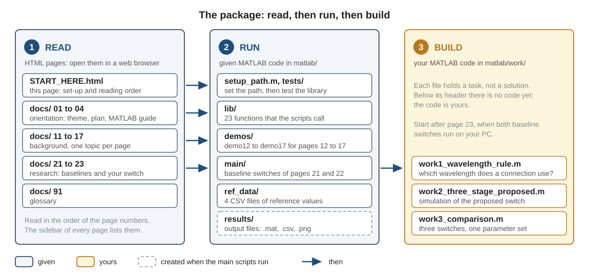

Start
00Start here
This is the first page of your research package. It tells you what the package contains, how to set it up in MATLAB, and in which order to read the pages.
Your research theme
Large-Scale Three-Stage Optical Circuit Switch Using Low-Loss Wavelength Routing
1. What this package is
The title above is the working title of the paper that you will write. You are not expected to understand it yet: the pages of this package explain every term in it. The package holds three kinds of material.
- read Pages to read: 15 HTML pages in
docs/, in addition to this one. They explain the research theme, the background knowledge, and the three switches that the research compares. - given Code to run: complete MATLAB code in
matlab/that passes its own tests. It consists of a library (a folder of functions that the scripts call), six demo scripts for the background pages, and the simulations of two baseline switches. A baseline is an existing design with which a new design is compared. - yours Code to build: three task files in
matlab/work/for the proposed switch, which is the new design. Each file states a task and holds no solution. Writing this code is the main part of your research.

You do not read all pages first and run all code afterwards. Go through Fig. 1 row by row: read the pages of a row and work with the code of the same row before you go on to the next row. Section 3 gives the exact order.
2. Set up in three steps
You need MATLAB R2020b or later. You need no toolbox: the code uses base MATLAB only. The package was tested with MATLAB R2025a on Windows.
- Unzip the package. Unzip the file that you received. Find the folder that contains
START_HERE.html,docsandmatlab. Put this folder in a place whose path contains no spaces and only ASCII characters: English letters, digits,_and-. The examples on this page useC:\research\clos_ulcf. With a space in the path, the commandcdof step 2 fails. The limit to ASCII characters is a precaution against problems with folder names. Do not move or rename anything inside the folder. OpenSTART_HERE.htmlfrom this folder in a web browser. The pages work without an internet connection. - Set the MATLAB path. The search path is the list of folders in which MATLAB looks for functions and scripts. Start MATLAB, make the folder
matlabof the package the current folder, and runsetup_path.
The first two output lines show your MATLAB version and the place of your folder>> cd C:\research\clos_ulcf\matlab >> setup_path MATLAB version : 25.1.0.2973910 (R2025a) Update 1 (this package needs R2020b or later) Package folder : C:\research\clos_ulcf\matlab Path is set (lib, demos, main, work, tests).matlab, so they differ on your PC. The path setting is not saved. Runsetup_pathagain every time you start MATLAB. - Test the library. Run
run_all_tests. It checks every function of the library, takes less than a minute and prints about 50 lines. Two figure windows open for a moment and close again; this is part of the test. Below,...stands for lines that are left out.
The last line must be>> run_all_tests Check 1 passed: attenuation Check 2 passed: calc_signal_power ... test_lib_power_loss: all passed ... test_lib_filters_qam: all passed ... test_lib_edfa: all passed All tests passed.All tests passed.If a check fails, MATLAB stops at this check and prints the reason in red. In that case do not go on. Look at the troubleshooting table in section 7 of page 04. If that does not help, send the complete red text to your supervisor.
3. Reading order
Read the pages in the order of their numbers. They form three groups. The glossary on page 91 lists the technical terms with their Japanese words and their names in the code. Keep it open in a second browser tab.
First: orientation
Page 01 will not be fully clear when you read it for the first time. This is expected: it is the introduction of a research paper, and it uses terms that pages 11 to 22 explain. Read it now to see where the work is going. Read it again after page 22.
Second: background
Each of pages 12 to 17 has a demo script in matlab/demos/. Page 11 has none. Every background page has a section "Check your understanding" with questions. Read the page, run its demo, and answer the questions before you go on.
demo12_units_power_budget
13Waveforms, FFT and filtersFrom one sample per symbol to a waveform, and filtering in the frequency domain. Demo: demo13_waveform_fft_filter
14Coherent receiver, DSP and BERHow the receiver selects one wavelength, recovers the symbols and counts the bit errors. Demo: demo14_coherent_rx_dsp_ber
15EDFA and ASE noiseThe erbium-doped fiber amplifier (EDFA) and the amplified spontaneous emission (ASE) noise that it adds; why a loss in front of the amplifier costs the most. Demo: demo15_edfa_ase
16Space switches and crosstalkSelectors and couplers, and crosstalk: unwanted light that leaks through a switch. Demo: demo16_space_switch_crosstalk
17AWG and wavelength routingThe arrayed-waveguide grating (AWG), which sends each wavelength to its own output port, and the uniform-loss and cyclic-frequency (ULCF) AWG with several input ports. Demo: demo17_awg_wavelength_routing
Third: research
Pages 21 and 22 each describe one baseline switch together with the scripts in matlab/main/ that simulate it. Page 23 states your three tasks.
step21_two_stage_one_point, main_two_stage_ULCF
22Conventional three-stage switchThe second baseline and its weak point. Scripts: step22_three_stage_one_point, main_three_stage_conventional
23Proposed three-stage switch: your workThe idea of the proposed switch, the open questions and your three tasks. Files: work1_wavelength_rule, work2_three_stage_proposed, work3_comparison
4. What is given and what is yours
Table 1 lists every folder of the package. One rule is behind it: the given files stay as they are, and everything that you write goes into matlab/work/.
| Folder or file | Content | Status | May you edit it? |
|---|---|---|---|
START_HERE.html, docs/ | This page and 15 further pages | read | No. Read them. |
matlab/setup_path.m | Script that sets the MATLAB path | given | No. Run it in every MATLAB session. |
matlab/lib/ | The library: 23 functions for the transmitter, filters, power and loss, amplifier, AWG, receiver and plots | given | No. Read the functions and call them. |
matlab/tests/ | run_all_tests and three test scripts for the library | given | No. Run them. |
matlab/demos/ | Six demo scripts, one for each of pages 12 to 17 | given | Only to try a value (see the note below). |
matlab/main/ | Four scripts for the two baseline switches. Each switch has a step script (step...), which simulates one setting, and a main script (main_...), which repeats this simulation for many settings. | given | Only to try a value (see the note below). |
matlab/ref_data/ | Four CSV files with reference values for the two baseline switches | given | No. |
matlab/work/ | Three task files: work1_wavelength_rule.m, work2_three_stage_proposed.m, work3_comparison.m | yours | Yes. This folder is yours. Add as many files as you need. |
matlab/results/ | Output files of the two main scripts (.mat, .csv, .png). Each file name carries the time of the run. A main script creates the folder if it does not exist. | created by runs | No. Never change a file here by hand. |
There are two kinds of change in a demo script or in a script of matlab/main/.
- You try a value. The pages and the script headers ask you to change a parameter value in section 1 of a script and to run the script again. Do this in the given file, and set the value back afterwards.
- Every other change. Save a copy of the script in
matlab/work/under a new name, for examplemy_step21.m, and change the copy. The new name is necessary:matlab/demos/andmatlab/main/come beforematlab/work/on the search path, so MATLAB can run the original in place of a copy with the same name.
If you are not sure that a given file is still the original, take it from the zip file again.
5. Working rules
These five rules keep your results reproducible. Reproducible means that you, or another person, can obtain the same result again later.
- Keep
run_all_testspassing. Run it on the first day, and again whenever you suspect that a given file has changed. A result that was produced while a test fails is not valid. Every test script starts withclear; close all, sorun_all_testsdeletes your variables and closes your figures. - Never edit a number by hand. Every number in a table or a figure is the output of a script. If a number is wrong, correct the script and run it again.
- Every figure comes from a saved result file. This holds for every figure that you show to another person. The result file stores the parameters and the seed together with the result. The seed is the number that you give to
rng. It fixes the random numbers, so that a run can be repeated exactly. The two main scripts already work this way: each run saves a.matfile with all parameters, the seed and all results. Do the same in your own scripts. - Write down what you changed and why. Keep a notebook. For every run that matters, note the date, the script, the change, the reason and the name of the result file.
- When a result surprises you, check a limit case before you believe it. A limit case is a setting for which you know the answer in advance. One example: without noise, the bit error ratio must be 0. Page 23 lists checks of this kind for your own code.
run_all_testsends withAll tests passed.on your PC.- You can say which folder is yours, and when you must copy a given script before you change it.
- You can state the five working rules.
Then go on to page 01.